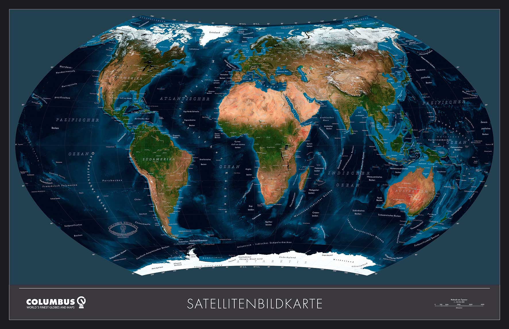
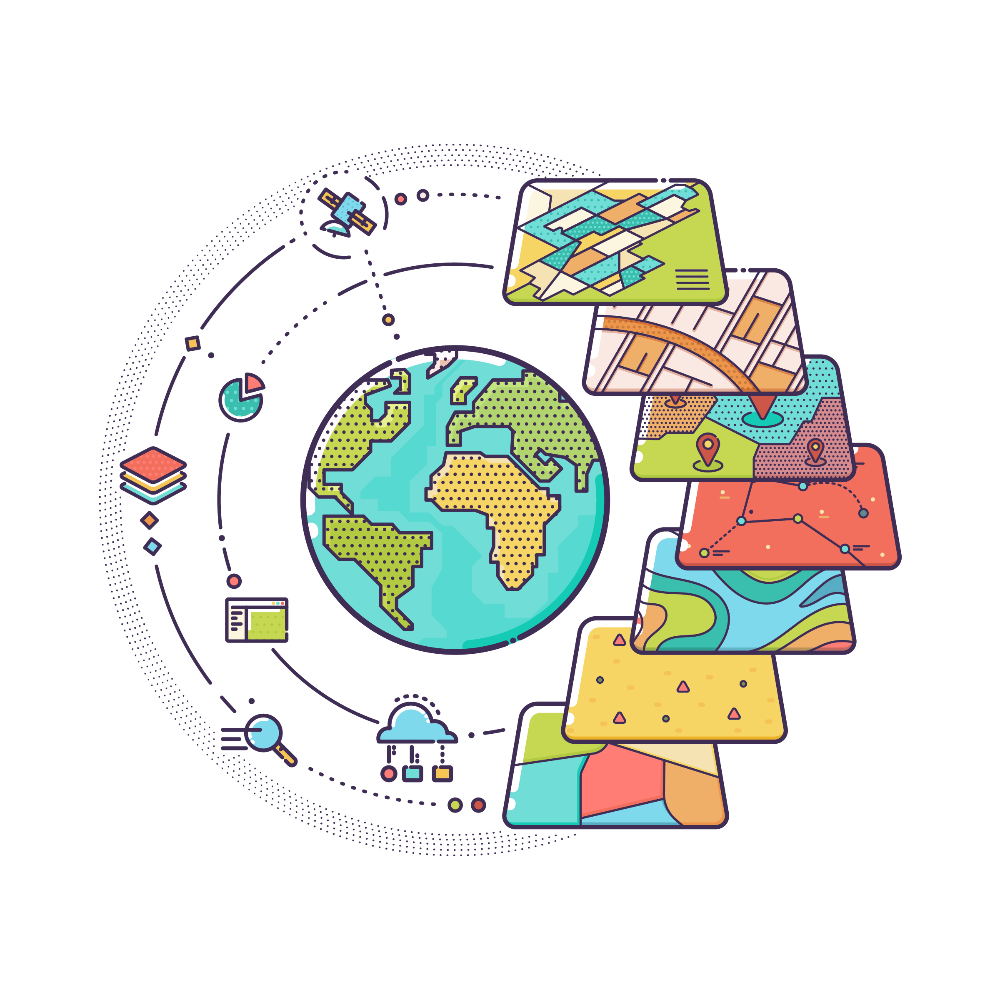

Période Contemporaine
Introduction
La période contemporaine est marquée par des avancées technologiques majeures en cartographie. Grâce aux satellites, aux systèmes d'information géographique (SIG) et à l'essor du numérique, la cartographie est devenue plus précise et accessible.
L'ère des images satellites
Les progrès des satellites d'observation de la Terre ont révolutionné la cartographie en permettant une surveillance en temps réel et une collecte de données à grande échelle. Ces données sont utilisées pour le climat, l'urbanisme, la gestion des ressources et bien plus encore.
Les images satellites fournissent des informations détaillées sur l'état de la planète, facilitant ainsi la prise de décisions en matière d'environnement et d'urbanisme.
Les Systèmes d'Information Géographique (SIG)
Les SIG ont permis de passer de la simple représentation spatiale à des analyses complexes, intégrant une multitude de données géospatiales pour des usages variés allant de la planification urbaine à la gestion des risques naturels.
Les SIG permettent de superposer différentes couches d'informations, facilitant l'analyse et la visualisation des données pour une prise de décision éclairée.
La cartographie numérique
Avec l'arrivée des technologies numériques et des applications cartographiques comme Google Maps ou OpenStreetMap, la cartographie est devenue interactive et accessible à tous. La géolocalisation en temps réel et les cartes dynamiques ont transformé notre façon de nous déplacer et de comprendre le monde.
Conclusion
La cartographie contemporaine, soutenue par des technologies avancées comme les satellites et les SIG, continue d'évoluer pour répondre aux besoins croissants des sociétés modernes. Elle joue un rôle crucial dans la gestion des ressources, l'urbanisme et la recherche scientifique.